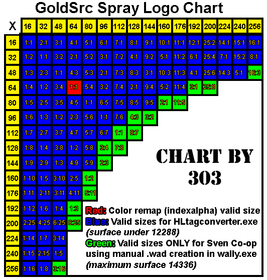

What are spraylogos? Spraylogos are images you can place on most surfaces in multiplayer games, with the exception of models. GoldSrc Spraylogos are made from 8-bit indexed BMPs meaning that they are restricted to 256 colours. Transparent spraylogos come in two forms: alphatest(255 colors & 1 color for transparency; hard edges) & indexalpha (256 greyscale image for smooth transparency but is remapped with a single changable color).
Default GoldSrc spraylogos and indexalpha are selected in the multiplayers tab, but for regular color & alphatest you have to use a different method. That method involves using a .WAD file called "tempdecal.wad" that is saved in your root game directory. Some common directories include
For custom indexalpha logos they are saved in the above only in a folder called "logos"
The resolutions of GoldSrc spraylogos are quite low, however their dimensions are more forgiving than in source engine. The available sizes in pixels are as follows:
Now since we have covered the basics we will now proceed to image preparation and creation of your spraylogo.